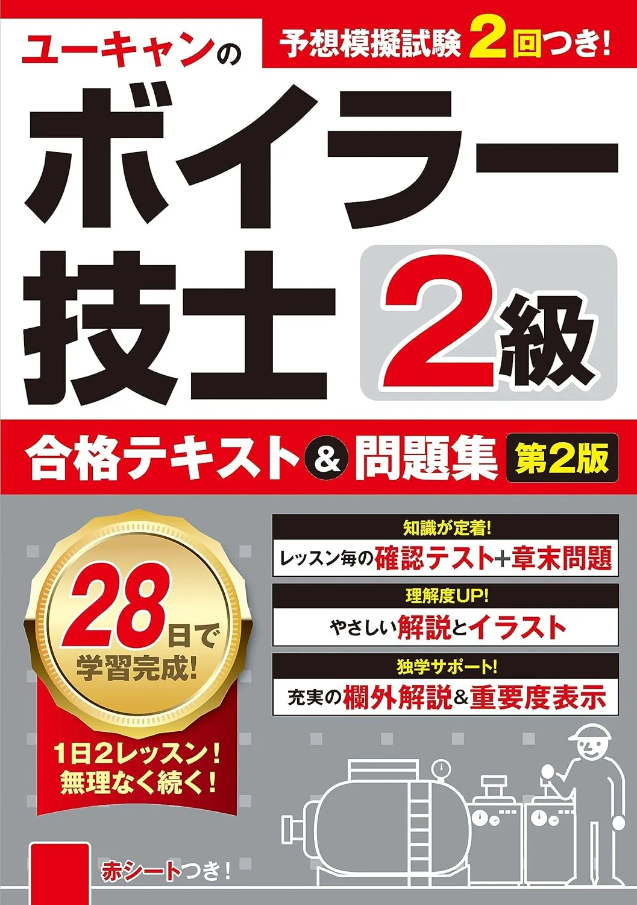

おすすめテキスト3選【2026年版】
ユーキャン合格テキスト&問題集・超速マスター・出る順の3冊を比較。4分野を1冊から始める基準を解説します。
3冊を比較するテキスト
2級ボイラー技士試験の制度理解から学習計画・演習・直前対策まで、受験フェーズ別の進め方をまとめています。用語の意味・比較・数値は用語解説（知識ハブ）、問題演習は過去問一覧からどうぞ。
2026年版の比較記事から、テキスト・問題集・公表問題の選び方へ。
全53記事。キーワード検索とジャンルで絞り込めます。
2級ボイラー技士試験の全体像を、4科目40問の構成・合格基準・受験から免許交付までの流れで解説。受験は誰でも可、免許交付には実務経験か実技講習が必要という要点も整理します。
2級ボイラー技士の公式情報は、試験＝安全衛生技術試験協会、免許・実技講習＝日本ボイラ協会と団体が分かれます。役割分担と、非公式サイトの数字に注意すべき点を整理します。
2級ボイラー技士試験は受験資格がなく誰でも受験できます。受験に実務経験は不要で、実務経験や実技講習が必要なのは免許交付の段階です。両者の違いを整理します。
2級ボイラー技士試験は各センターで月1〜2回、地域により出張試験が年1〜2回。日程の調べ方と、締切から逆算して学習計画を立てる方法、日程選びの実務をまとめます。
2級ボイラー技士試験の受験手数料は8,800円（非課税）。2023年6月改定で旧6,800円は古い情報です。納付方法と、教材費・実技講習費・交通費まで含めた費用の考え方をまとめます。
2級ボイラー技士試験の申込みを書面申請とオンライン申請の手順で解説。必要書類や手数料の納付、申込後から受験票が届くまでの流れをまとめます。
2級ボイラー技士試験の申込締切前に確認したい項目を、受付期間・会場・手数料・書類のチェックリストで整理。消印有効か必着か、締切を逃したときの対応もまとめます。
2級ボイラー技士試験の会場は全国7か所の安全衛生技術センターが基本で、地域により出張試験もあります。会場の選び方と当日の移動の準備をまとめます。
2級ボイラー技士試験で実務経験をどう学習に活かすかを解説。受験に実務経験は不要ですが、現場知識は取扱い・構造の理解に役立ち、免許交付の要件にも使えます。未経験者の補い方もまとめます。
2級ボイラー技士試験の合格率を令和6年度の実数（受験21,226人・合格11,428人・53.8%）で解説。年度や試験場で振れる理由と、合格率を学習にどう使うかをまとめます。
2級ボイラー技士試験の難易度を、合格率・足切り・科目別の特徴から解説。落ちる人に多いパターンと、独学で合格レベルに届かせる手順・勉強時間の目安をまとめます。
2級ボイラー技士試験の合格点を、合計240点・各科目40点という2つの基準で具体例つきに解説。足切りの仕組みと1問の重み、本番での点の取り方をまとめます。
2級ボイラー技士試験の解答形式を解説。五肢択一マークシート・40問・3時間・1問10点で部分点なし、CBTではなく紙の試験です。形式から逆算した対策もまとめます。
2級ボイラー技士試験の4科目（構造・取扱い・燃料及び燃焼・関係法令）の配点と主な出題範囲を科目ごとに解説。均等配点で捨て科目が作れない理由と得点設計をまとめます。
2級ボイラー技士試験の時間配分を、180分40問のペース計算から解説。時間が余りやすい試験で見直し時間を確保し、1問への固執を避ける解き方をまとめます。
2級ボイラー技士試験の出題範囲を、テキストの章立てや過去問にどう対応づけるかで解説。範囲を絞りすぎず広げすぎない学習配分と、範囲確認のチェック方法をまとめます。
2級ボイラー技士試験の受験要項の読み方を、日程・申込・受験手数料・持ち物・合格基準の確認順に解説。年度で変わる項目と変わりにくい項目を見分けるコツもまとめます。
2級ボイラー技士試験のテキストの選び方を、1冊に絞る理由・選ぶポイント・問題集との役割分担・最新版の確認から解説。独学で挫折しない教材選びをまとめます。
2級ボイラー技士試験の間違いノートの作り方を、書く内容・科目別の整理・見返すタイミングから解説。弱点を一か所に集めて復習を効率化するコツをまとめます。
2級ボイラー技士試験は全科目に足切りがあるため、苦手科目に重みを付けて周回するローテーション学習が有効です。得意科目の維持と回し方をまとめます。
2級ボイラー技士のおすすめ問題集3選。成美堂過去6回·オームさくさく解ける·TAKARA 2026年4月版を40問·240点·各40点足切り·18週逆算で比較。テキスト第1周後の演習1冊選びと購入順序の具体例付き。
2級ボイラー技士のおすすめテキスト3選。ユーキャン合格T&Q·TAC超速マスター·らくらく突破を40問·240点·各40点足切り·18週逆算で比較。購入順序とAmazon URL確定の具体例付き。
2級ボイラー技士試験の過去問を分野別に解く方法を解説。科目ごとに正答率を出して弱点を特定し、間違いノートで復習、通し演習と組み合わせる手順をまとめます。
2級ボイラー技士の公表問題·公式教材3選。協会 公表問題解答2026·標準問題集·TAC超速問題集を40問·240点·各40点足切り前提で比較。過去問との使い分けと購入順序の具体例付き。
2級ボイラー技士試験の構造科目の基礎を、全体像・ボイラーの種類・主要部と附属品・基礎の固め方から解説。図と用語をセットで覚える学習法をまとめます。
2級ボイラー技士試験の取扱い科目の基礎を、全体像・運転の基本手順・水処理・基礎の固め方から解説。手順を理由とともに覚える学習法をまとめます。
2級ボイラー技士試験の燃料及び燃焼科目の基礎を、全体像・燃料の種類・空気比・通風から解説。理屈と数値を行き来して得点する学習法をまとめます。
2級ボイラー技士試験の関係法令の基礎を、検査・届出・作業主任者の枠組みから解説。二級が作業主任者になれる伝熱面積の区分や、基礎の固め方をまとめます。
2級ボイラー技士試験で問われる蒸気配管のドレンと暖管（ウォーミングアップ）を解説。ウォーターハンマーの仕組みと防止、送気前に暖管を行う理由をまとめます。
ボイラー検査証の更新の流れを、性能検査の受検から休止・使用再開検査まで時系列で解説。有効期間1年の数字と手順を覚える、2級ボイラー技士の法令対策です。
2級ボイラー技士試験の関係法令を得点源にする過去問の解き方を解説。頻出テーマの掴み方、数値と期限の覚え方、ひっかけへの対処をまとめます。
2級ボイラー技士試験の関係法令で問われるボイラー検査の種類を、落成検査・性能検査・変更検査・使用再開検査の場面ごとに整理。検査証や有効期間との関係もまとめます。
2級ボイラー技士試験向けに、ボイラーの届出4種類（設置・変更・休止・廃止）を早見表で整理。設置と変更、休止と廃止の混同しやすい違いを区別するコツをまとめます。
2級ボイラー技士試験で問われる蒸気トラップを解説。ドレンだけを排出する役割、メカニカル式・温度調整式・熱力学式の種類、ウォーターハンマーの危険をまとめます。
2級ボイラー技士試験で問われるスートブロワを解説。伝熱面のすすを吹き払う役割、すす付着による効率低下、灰とスラグの処理の違いをまとめます。
2級ボイラー技士試験で問われるボイラー検査証と性能検査を解説。検査証の役割・有効期間（原則1年）・性能検査での更新・休止時の扱いまで、法令の頻出ポイントをまとめます。
2級ボイラー技士試験の関係法令で問われるボイラーの届出を、設置届・変更届・休止の報告・廃止の報告に分けて整理。提出先や期限、ともなう検査との関係をまとめます。
2級ボイラー技士試験の関係法令は改正されることがあります。古い教材のリスクと、公式情報で改正に追従する方法、試験での向き合い方をまとめます。
2級ボイラー技士試験の4科目は構造・取扱い・燃料及び燃焼・関係法令が互いに関連します。科目間のつながりとおすすめの学習順序、横断的な復習の仕方をまとめます。
2級ボイラー技士試験に再挑戦する人向けに、不合格原因の分析・足切り科目の立て直し・間違いの質の見極め・次回までの計画という弱点の潰し方を解説します。
2級ボイラー技士試験の勉強時間の目安と、通読・演習・弱点補強の3ステップで学習計画を立てる方法を解説。期間別の配分例と、計画を続けるコツもまとめます。
2級ボイラー技士試験の本番での解き方を、解く順番・取れる問題優先・捨て問の見極め・マークと見直しの作法から解説。足切り回避につながる実戦の組み立てをまとめます。
2級ボイラー技士試験の五肢択一でよくある、似た選択肢のひっかけ対策を解説。数値・用語のすり替えや「正しい／誤り」の問われ方に注意し、過去問で見分ける力を養う方法をまとめます。
2級ボイラー技士試験で問われる附属品（安全弁・水面計・圧力計など）の役割と日常点検、異常時の対応をまとめます。役割の取り違えに注意する取扱い対策です。
2級ボイラー技士試験で問われる燃焼の順序制御（シーケンス制御）を解説。点火前のプレパージ、火炎検出器と燃料遮断弁による燃焼安全装置の役割をまとめます。
2級ボイラー技士試験の前日にやることを、持ち物・会場の段取り・前日学習・体調管理の観点でチェックリスト化。新しい勉強より知識の最終整理と睡眠を優先する理由もまとめます。
2級ボイラー技士試験の当日の持ち物を、必須（受験票・本人確認書類・筆記具）とあると安心の品に分けて解説。前日の準備と会場での扱いの注意もまとめます。
2級ボイラー技士試験の当日の流れを、会場到着・受付・試験説明・3時間の試験・退室まで時系列で解説。遅刻の扱いや試験中の注意点もまとめます。
2級ボイラー技士試験の合格後の手続きを、合格通知の受領から交付要件の確認、免許申請、免許証の交付、就業までの流れで解説します。
2級ボイラー技士試験の合格発表は試験後おおむね1週間後（出張試験は約1か月）。安全衛生技術試験協会のサイトでの受験番号確認と、合格通知書の種類・発表後の動きをまとめます。
2級ボイラー技士の免許申請の実務を、必要な理由・交付要件・必要書類と申請先・申請時の注意点から解説。合格後に免許証を受け取るまでの手続きをまとめます。
2級ボイラー技士試験に再挑戦する人向けに、気持ちの切り替え・敗因の大づかみ・次の回の選び方・再受験の申込の戦略をまとめます。
2級ボイラー技士の合格後に、資格を現場でどう活かし学び続けるかを解説。一級へのステップアップや、法令・基準の更新に追従する習慣をまとめます。